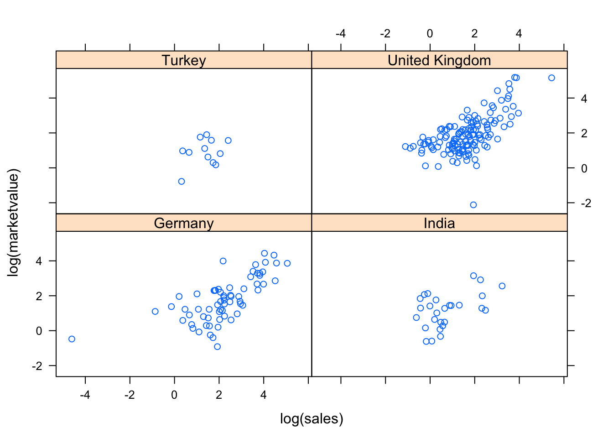

9 Example: Predict adults salary
Let us consider the data adult.csv. We will try to predict the ABOVE50k response variable (Salary >50k) through a logistic regression based on explanatory demographic variables.
inputData <- read.csv("http://idaejin.github.io/courses/R/data/adult.csv")
head(inputData)## AGE WORKCLASS FNLWGT EDUCATION EDUCATIONNUM MARITALSTATUS
## 1 39 State-gov 77516 Bachelors 13 Never-married
## 2 50 Self-emp-not-inc 83311 Bachelors 13 Married-civ-spouse
## 3 38 Private 215646 HS-grad 9 Divorced
## 4 53 Private 234721 11th 7 Married-civ-spouse
## 5 28 Private 338409 Bachelors 13 Married-civ-spouse
## 6 37 Private 284582 Masters 14 Married-civ-spouse
## OCCUPATION RELATIONSHIP RACE SEX CAPITALGAIN CAPITALLOSS
## 1 Adm-clerical Not-in-family White Male 2174 0
## 2 Exec-managerial Husband White Male 0 0
## 3 Handlers-cleaners Not-in-family White Male 0 0
## 4 Handlers-cleaners Husband Black Male 0 0
## 5 Prof-specialty Wife Black Female 0 0
## 6 Exec-managerial Wife White Female 0 0
## HOURSPERWEEK NATIVECOUNTRY ABOVE50K
## 1 40 United-States 0
## 2 13 United-States 0
## 3 40 United-States 0
## 4 40 United-States 0
## 5 40 Cuba 0
## 6 40 United-States 0Check Class bias
Ideally, the proportion of events and non-events in the \(Y\) variable should approximately be the same. So, lets first check the proportion of classes in the dependent variable ABOVE50K.
table(inputData$ABOVE50K)##
## 0 1
## 24720 7841Clearly, there is a class bias, a condition observed when the proportion of events is much smaller than proportion of non-events. So we must sample the observations in approximately equal proportions to get better models.
Create Training and Test Samples
One way to address the problem of class bias is to draw the 0’s and 1’s for the trainingData (development sample) in equal proportions. In doing so, we will put rest of the inputData not included for training into testData (validation sample). As a result, the size of development sample will be smaller that validation, which is okay, because, there are large number of observations (>10K).
# Create Training Data
input_ones <- inputData[which(inputData$ABOVE50K == 1), ] # all 1's
input_zeros <- inputData[which(inputData$ABOVE50K == 0), ] # all 0's
set.seed(100) # for repeatability of samples
input_ones_training_rows <- sample(1:nrow(input_ones), 0.7*nrow(input_ones)) # 1's for training
input_zeros_training_rows <- sample(1:nrow(input_zeros), 0.7*nrow(input_ones)) # 0's for training.
# Pick as many 0's as 1's
training_ones <- input_ones[input_ones_training_rows, ]
training_zeros <- input_zeros[input_zeros_training_rows, ]
trainingData <- rbind(training_ones, training_zeros) # row bind the 1's and 0's
# Create Test Data
test_ones <- input_ones[-input_ones_training_rows, ]
test_zeros <- input_zeros[-input_zeros_training_rows, ]
testData <- rbind(test_ones, test_zeros) # row bind the 1's and 0's Build Logit Models and Predict
logitMod <- glm(ABOVE50K ~ RELATIONSHIP + AGE + CAPITALGAIN + OCCUPATION + EDUCATIONNUM, data=trainingData, family=binomial(link="logit"))## Warning: glm.fit: fitted probabilities numerically 0 or 1 occurredpredicted <- plogis(predict(logitMod, testData)) # predicted scores
# or
predicted <- predict(logitMod, testData, type="response") # predicted scores
When we use the predict function on this model, it will predict the log(odds) of the \(Y\) variable. To convert it into prediction probability scores that is bound between 0 and 1, we use the plogis().
Decide on optimal prediction probability cutoff for the model
The default cutoff prediction probability score is \(0.5\) or the ratio of 1’s and 0’s in the training data. But sometimes, tuning the probability cutoff can improve the accuracy in both the development and validation samples. The InformationValue::optimalCutoff function provides ways to find the optimal cutoff to improve the prediction of 1’s, 0’s, both 1’s and 0’s and o reduce the misclassification error. Lets compute the optimal score that minimizes the misclassification error for the above model.
library(InformationValue)
optCutOff <- optimalCutoff(testData$ABOVE50K, predicted)[1]
optCutOff## [1] 0.89
Misclassification Error
Misclassification error is the percentage mismatch of predcited vs actuals, irrespective of 1’s or 0’s. The lower the misclassification error, the better is your model.
misClassError(testData$ABOVE50K, predicted, threshold = optCutOff)## [1] 0.0892ROC
Receiver Operating Characteristics Curve traces the percentage of true positives accurately predicted by a given logit model as the prediction probability cutoff is lowered from 1 to 0. For a good model, as the cutoff is lowered, it should mark more of actual 1’s as positives and lesser of actual 0’s as 1’s. So for a good model, the curve should rise steeply, indicating that the TPR (Y-Axis) increases faster than the FPR (X-Axis) as the cutoff score decreases. Greater the area under the ROC curve, better the predictive ability of the model.
plotROC(testData$ABOVE50K, predicted)
Specificity and Sensitivity
Sensitivity (or True Positive Rate) is the percentage of 1’s (actuals) correctly predicted by the model, while, specificity is the percentage of 0’s (actuals) correctly predicted. Specificity can also be calculated as 1-False Positive Rate. \[
\text{Sensitivity}=\frac{\#\text{Actual 1's and Predicted as 1's}}{\# \text{of Actual 1's}}
\] \[
\text{Specificity}=\frac{\#\text{Actual 0's and Predicted as 0's}}{\# \text{of Actual 0's}}
\]
sensitivity(testData$ABOVE50K, predicted, threshold = optCutOff)## [1] 0.3442414specificity(testData$ABOVE50K, predicted, threshold = optCutOff)## [1] 0.9800853The above numbers are calculated on the validation sample that was not used for training the model. So, a truth detection rate of 34.42% on test data is good.
Confusion Matrix The columns are actuals, while rows are predicteds.
confusionMatrix(testData$ABOVE50K, predicted, threshold = optCutOff)## 0 1
## 0 18849 1543
## 1 383 810